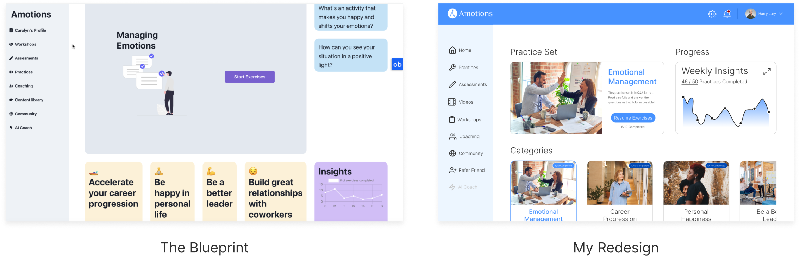
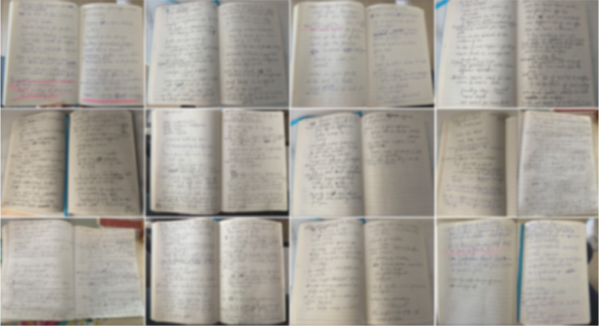
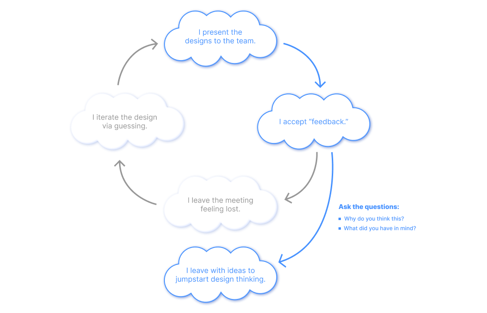

Teleport To:
Amotions is a early-stage startup that is developing a dashboard webapp and is looking to launch an MVP in late July 2022. My responsibility was designing the skill practice userflow. During the process, I solved design challenges and team feedback obstacles.
Figma
Apr - Sept 2022 (6 Months)
Amotions offers managers and their teams soft-skills coaching from world-class experts. The skill-learning industry is growing at a rapid rate because employers and executives are realizing that investing into their employees is essential for company growth and are scrambling to find platforms that fit their needs.
My take-home assignment was to redesign the practice home screen of the dashboard webapp. Even though I asked the founder several questions regarding the functionalities and expectations, I knew I didn’t have all the data I needed so I focused on the UI only.
When I became an employee at the company, I was inundated with information such as the product spec and research notes. Before I jumped into designing again, I needed to understand the customer fully. That meant taking a detailed read into all existing user research.
The research notes are blurred to protect the interviewees' identities.
To understand the customer’s needs, I created a persona that reflected the research. I showed the persona to the team to ensure that I was on the same page as everyone else. Additionally, this step came in handy when I had to create a journey map that simulated the customer’s experience.

The flow diagram starts when the user enters the practice home page and ends when the user doesn’t require the services of the feature anymore. The core functionalities of the flow include:

After taking the product spec and user research into account, I had to change many elements of my take-home assessment version of the practice home page. When I presented my version one to the team, I was met with criticism and after spending the whole meeting defending my design choices, I ultimately had to change the design. Version two and three had the same outcome and I felt lost.
Prior to designing, I stated to the team that I welcomed feedback on my designs so I could iterate. Yet, I gave no thought to what I meant by feedback.
I thought statements like: “I think that’s awkward” or “It needs to look better” was good feedback but attempting to address those statements led me on wild tangents. As a result, I was caught in a cycle that stalled the design.

It was the first week of July 2022. I had about 3 weeks to get the team’s approval for the mockups in the practice userflow, so the developers can start developing the product.
I started by telling my team that the feedback I’m getting is not helping me. In the following feedback sessions, I spoke up when I didn’t know EXACTLY what my teammates were trying to articulate. By doing that, I had gotten myself out of the cycle!
Because of all the design assumptions that I was inevidably making, I wanted to get our potential client’s thoughts on what I was designing. However, due to the company’s circumstances, I was denied that request.
I didn’t want to end it there and got the team’s permission to get feedback from my friends and mentors from outside the company by making the point that those people might be the employees who are using our platform because their managers introduced it to them.
The overall flow was standard and easy to understand so most of the feedback focused on the practice home screen itself.

Here are the major findings from the feedback sessions:
Although I couldn’t get access to our target demographic, I still needed to account for them. Thus, I got the team together in the next meeting and used the persona to walk through my mockups step by step.

Here are the major findings from the journey map:
The fact that all 7 people I interviewed didn’t know what to do first when they saw the practice home was alarming. If customers don’t know where to begin, they wouldn’t care about doing the practices at all.
Customers are supposed to start with the daily practices and then transition to doing some of their chosen skills of focus. If people have time, they would browse the other skills that Amotions has to offer.
Additionally, I kept the UI as focused as possible by using 2-3 font sizes and not overwhelming the user with too many images and interactions.


From colors and fonts to buttons and text fields, I wanted to be as comprehensive as possible because I knew Figma’s “Inspect” feature is limited. I also Included an asset folder that contained the relevant images and icons so the development team can focus on coding the product.

I watched the video recordings of those sessions and made a few changes based on my observations.
Observation 1:
People tried clicking on the skills of focus labels, which did nothing.
Action:
I allowed the skills of focus labels in the practice home to direct people to the practice set selection screen for quicker access to the relevant practice sets.
Observation 2:
Some practice sets had longer names than I expected. Because of that, people thought the screen looked messy.
Action:
I created a more flexible layout that would allow for longer practice set titles and a more pleasant UI.
Observation 3:
People got confused as to where in the flow they were in.
Action:
I changed the fairly useless “back to [blank]” text button in favor of breadcrumbs, which does a good job at visually showing the user’s location in the flow.
Due to better product navigation, customers were able to view more content, which prompted more interest in the company and thus, customers were more willing to go into the app to see what changed, since there were weekly changes being added to the product.
When I left the company in preparation for a heavy college workload, the company only completed its first round of MVP iterations. There will be more sessions planned in the future. Those sessions will not only test the practice flow that I took the lead on, but also the other features of the dashboard webapp that my fellow designers created. After every round, comes product iterations, which will make the product better and better!
As a designer, I will be participating in more design feedback sessions in the future. This experience has challenged me and given me a taste of what's to come. And I learned that I needed to be open and speak up if the feedback pushed me in the wrong direction.
Additionally, everyone on the team has a part to play and it is my job as a designer to get everyone involved. The skill of communicating ideas to non-designers is important. By including people, I was able to improve the product.